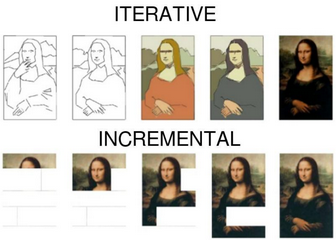

All.write unit tests.how to guide
Write Unit Tests#
Guidelines about writing unit tests#
What is a unit test?#
- A unit test is a small, self-contained test of a (public) function or method of a library
- The test specifies the given inputs, any necessary state, and the expected output
- Running the test ensures that the actual output agrees with the expected output
Why is unit testing important?#
- Good unit testing improves software quality by:
- Eliminating bugs (obvious)
- Clarifying code design and interfaces ("Design to Test")
- Making refactoring safer and easier ("Refactor Early, Refactor Often")
- Documenting expected behavior and usage
The Pragmatic Programming and unit testing#
-
Unit testing is an integral part of The Pragmatic Programming approach
-
Some of the tips that relate to unit testing are:
- Design with Contracts
- Refactor Early, Refactor Often
- Test Your Software, or Your Users Will
- Coding Ain't Done Till All the Tests Run
- Test State Coverage, Not Code Coverage
- You Can't Write Perfect Software
- Crash Early
- Design to Test
- Test Early. Test Often. Test Automatically.
- Use Saboteurs to Test Your Testing
- Find Bugs Once
-
Read these wisdom pearls carefully and you will have made another step towards programming mastery
Unit testing tips#
Test one thing#
- A good unit test tests only one thing
- A test class should test only one function / class
- A test method should only test a single case (e.g., "for these inputs the function responds with this output"
- Testing one thing keeps the unit test simple, relatively easy to understand, and helps isolate the root cause when the test fails
- How do you test more than one thing? By having more than one unit test!
Keep tests self-contained#
- A unit test should be independent of all other unit tests
- Each test should be self-sufficient
- One should never assume that unit tests will be executed in a particular order
- A corollary of keeping tests self-contained is to keep all information needed
to understand the test within the test itself
- Specify the data explicitly in the test where it is used
- This makes the test easier to understand and easier to debug when it fails
- If multiple unit tests use or can use the same initialization data, do not hesitate repeating it in each test (or consider using parameterized testing)
Only specify data related to what is being tested#
- Specify the minimum of what is required to test what is being tested
- E.g., if a function that is being tested supports optional arguments, but those optional arguments are not needed for a particular unit test, then do not specify them in the test
Test realistic corner cases#
- Can the function receive an empty list?
- Can it return an empty Series?
- What happens if it receives a numerical value outside of an expected range?
- How should the function behave in those cases? Should it crash? Should it return a reasonable default value?
- Expect these questions to come up in practice and think through what the appropriate behavior should be. Then, test for it.
Test a typical scenario#
- In ensuring that corner cases are covered, do not overlook testing basic functionality for typical cases
- This is useful for verifying current behavior and to support refactoring.
Test executable scripts end-to-end#
- In some cases, like scripts, it is easy to get lost chasing the coverage %
- E.g., covering every line of the original, including the parser
- This is not always necessary
- If you can run a script with all arguments present, it means that the parser works correctly
- So an end-to-end smoke test will also cover the parser
- This saves a little time and reduces the bloat
- If you need to test the functionality, consider factoring out as much code as
possible from
_main()- A good practice is to have a
_run()function that does all the job and_main()only brings together the parser and the executable part
- A good practice is to have a
Test from the outside-in#
- Prefer testing end-to-end behaviors first, rather than starting with internal implementation details.
- This helps focus tests on what the system should do, not how it's implemented.
- It also lowers maintenance costs when internal code is refactored, since interface-level tests don't need to change.
- Start with public-facing methods or behaviors, and only add tests for internal helpers if truly necessary.
- This approach supports flexible and safe refactoring, encourages clear interfaces, and reduces test fragility.
Conventions#
Naming and placement conventions#
-
We follow conventions that happen to be mostly the default to
pytest -
A directory
testcontains all the test code and artifacts- The
testdirectory contains all thetest_*.pyfiles and all inputs and outputs for the tests. - A unit test file should be close to the library / code it tests
- The
-
The test class should make clear reference to the code that is tested
- To test a class
FooBar, the corresponding test class is namedTestFooBar, i.e. we use the CamelCase for the test classes - To test a function
generate_html_tables(), the corresponding test class is namedTest_generate_html_tables - To test a method
method_a()of the classFooBar, the corresponding test class is namedTestFooBarand the test method in this class is namedtest_method_a - To test a protected method
_gozilla()ofFooBar, the corresponding test method is namedtest__gozilla(note the double underscore). This is needed to distinguish testing the public methodFooBar.gozilla()fromFooBar._gozilla()
- To test a class
-
Numbers can be used to differentiate between separate test cases clearly
- A number can be added to the test class name, e.g.,
TestFooBar1(), if there are multiple test classes that are testing the code in different ways (e.g., with different set up and tear down actions) - We prefer to name classes
TestFooBar1and methodsTestFooBar1.test1(), even if there is a single class / method, to make it easier to add another test class, without having to rename class andcheck_stringfiles - We are OK with using suffixes like
01,02, ... , when we believe it's important that methods are tested in a certain order (e.g., from the simplest to the most complex)
- A number can be added to the test class name, e.g.,
-
A single test class can have multiple test methods, e.g., for
FooBar.method_a()andFooBar.method_b(), the test class contains the following methods:```python class TestFooBar1(unittest2.TestCase): def test_method_a(self): ...
def test_method_b(self): ...```
-
Split test classes and methods in a reasonable way so each one tests one single thing in the simplest possible way
Keep testing code in sync with tested code#
- If you change the name of a tested class, also the test should be changed
- If you change the name of a file also the name of the file with the testing code should be changed
Test code is not second-class citizen#
-
Test code is not second-class citizen, even though it's auxiliary to the code
-
Add comments and docstring explaining what the code is doing
-
Avoid repetition in test code, but use helper to factor out common code
- Abhor copy-paste and keep the code DRY
Testing code layout#
- The layout of a test dir should look like:
> ls -1 helpers/test/ Test_dassert1.test2 Test_dassert1.test3 Test_dassert1.test4 ... Test_dassert_misc1.test6 Test_dassert_misc1.test8 Test_system1.test7 test_dbg.py test_helpers.py test_system_interaction.py
Our framework to test using input / output data#
/helpers/hunit_test.pyhas some utilities to easily create input and output dirs storing data for unit tests-
hunitest.TestCasehas various methods to help you create dirsget_input_dir(): return the name of the dir used to store the inputsget_scratch_space(): return the name of a scratch dir to keep artifacts of the testget_output_dir(): probably not interesting for the user
-
The directory structure enforced by the out
TestCaseis like:> tree -d edg/form_8/test/ edg/form_8/test/ âÂÂâÂÂâ TestExtractTables1.test1 âÂÂâÂÂâ input âÂÂâÂÂâ output
Use text and not pickle files as input/outputs#
-
The problems with pickle files are the usual ones
- Pickle files are not stable across different versions of libraries
- Pickle files are not human-readable
-
Prefer to use text file
- E.g., use a CSV file
-
If the data used for testing is generated in a non-complicated way
- Document how it was generated
- Even better, add a test that generates the data
Small testing data is best#
-
Use a subset of the input data
-
The smaller, the better for everybody
- Fast tests
- Easier to debug
- More targeted unit test
-
Do not check in 1 megabyte of test data!
Last review: GP on 2024-05-13
check_string vs self.assertEqual#
- Use
self.assert_equal()when you expect a simple, small string comparison. - Use
self.check_string()when:- The expected string is too large to inline in code.
- You want a frozen reference output stored on disk.
- The test output may change less frequently but still needs stable diffing.
- Rule of thumb:
- If it's simple →
assert_equal() - If it's large, externalized, or behavioral regression →
check_string().
- If it's simple →
Use self.assert_equal()#
- This is a function that helps you understand what the mismatches are
- It works on
str
How to split unit test code in files#
- The two extreme approaches are:
- All the test code for a directory goes in one file
foo/bar/test/test_$DIRNAME.py(orfoo/bar/test/test_all.py) - Each file
foo/bar/$FILENAMEwith code gets its correspondingfoo/bar/test/test_$FILENAME.py- It should also be named according to the library it tests
- For example, if the library to test is called
pnl.py, then a corresponding unit test should be calledtest_pnl.py
- All the test code for a directory goes in one file
- Pros of 1) vs 2)
- Less maintenance churn
- It takes work to keep the code and the test files in sync, e.g.,
- If you change the name of the code file, you don't have to change other file names
- If you move one class from one file to another, you might not need to move test code
- It takes work to keep the code and the test files in sync, e.g.,
- Fewer files opened in your editor
- Avoid many files with a lot of boilerplate code
- Less maintenance churn
- Cons of 1) vs 2)
- The single file can become huge!
- Compromise solution: Start with a single file
test_$DIRNAME.py(ortest*dir_name.py) * In the large file add a framed comment like: ```python
#
Unit tests for ...#
#
```
- So it's easy to find which file is tested were using grep
- Then split when it becomes too big using
test_$FILENAME.py
Template for unit test#
- Interesting unit tests are in
helpers/test - A unit test looks like:
python import helpers.hunit_test as hunitest class Test...(hunitest.TestCase): def test...(self): ... pytestwill take care of running the code so you don't need:python if __name__ == '__main__': unittest.main()
Use consistent comments in test methods#
We strongly encourage adding short, consistent comments at the start of each main action within your test methods to establish a unified structure:
import helpers.hunit_test as hunitest
class TestFooBar1(hunitest.TestCase):
def test_method_a(self):
# Prepare inputs.
input_value = 42
# Run.
actual = foo_bar_function(input_value)
# Check.
expected = "some_expected_value"
self.assert_equal(str(actual), expected)
This makes it easy to scan what the test is doing and quickly understand its three core steps. It also improves readability and consistency across all our test code.
Hierarchical TestCase approach#
- Whenever there is a hierarchy in classes, we also create a hierarchy of test classes
- A parent test class looks like:
python import helpers.hunit_test as hunitest class SomeClientTestCase(hunitest.TestCase): def _test...1(self): ... def _test...2(self): ... - While a child test class looks like this, where test methods use the
corresponding methods from the parent test class:
python class TestSomeClient(SomeClientTestCase): def test...1(self): ... def test...2(self): ... - Each
TestCasetests a "behavior" like a set of related methods - Each
TestCaseis under the test dir - Each derived class should use the proper
TestCaseclasses to reach a decent coverage - It is OK to use non-private methods in test classes to ensure that the code is in order of dependency so that the reader doesn't have to jump back / forth
-
We want to separate chunks of unit test code using:
```python
#
```
putting all the methods used by that chunk at the beginning and so on
-
It is OK to skip a
TestCasemethod if it is not meaningful, when coverage is enough - As an example, see
datapull/common/data/client/test/im_client_test_case.pyanddatapull/ccxt/data/client/test/test_ccxt_clients.py
Use the appropriate self.assert*#
- When you get a failure, you don't want to get something like "True is not False", rather an informative message like "5 is not < 4"
- Bad
self.assertTrue(a < b) - Good
self.assertLess(a, b)
Do not use hdbg.dassert in testing#
dasserts are for checking the self-consistency of the code- The invariant is that you can remove
dbg.dassertwithout changing the code's behavior. Of course, you can't remove the assertion and get unit tests to work
Always explain self.assertRaises#
- When testing for an assertion, always use the following idiom to clearly explain what exception is expected and why:
with self.assertRaises(AssertionError) as cm:
hlitagit.git_patch_create(
ctx, mode, modified, branch, last_commit, files
)
act = str(cm.exception)
exp = r"""
#### Failed assertion * '0' == '1' Specify only one among --modified,
--branch, --last-commit
"""
self.assert_equal(act, exp, fuzzy_match=True)
Test from the outside-in#
- We want to start testing from the end-to-end methods towards the constructor of an object
- Rationale: often, we start testing the constructor very carefully and then we get tired / run out of time when we finally get to test the actual behavior
- Also, testing the important behavior automatically tests building the objects
- Use the code coverage to see what's left to test once you have tested the "most external" code
We don't need to test all the assertions#
- Focus on behavioral correctness, not line coverage.
- We don't need to exhaustively test every
dassertor input validation unless it's part of the system's observable behavior. - Behavioral coverage gives better ROI than aiming for 100% line coverage.
Use strings to compare output instead of data structures#
-
Often, it's easier to do a check like:
```python
Better:#
expected = str(...) expected = pprint.pformat(...)
Worse:#
expected = ["a", "b", { ... }] ```
rather than building the data structure
- Some purists might not like this, but
- It's much faster to use a string (which is or should be one-to-one to the
data structure), rather than the data structure itself
- By extension, many of the more complex data structure have a built-in string representation
- It is often more readable and easier to diff (e.g.,
self.assertEqualvsself.assert_equal) - In case of mismatch, it's easier to update the string with copy-paste rather than creating a data structure that matches what was created
- It's much faster to use a string (which is or should be one-to-one to the
data structure), rather than the data structure itself
Use self.check_string() for things that we care about not changing (or are too big to have as strings in the code)#
- Use
self.assert_equal()for things that should not change (e.g., 1 + 1 = 2) - When using
check_stringstill try to add invariants that force the code to be correct - E.g., if we want to check the PnL of a model, we can freeze the output with
check_string(), but we want to add a constraint like there are more timestamps than 0 to avoid the situation where we update the string to something malformed
Each test method should test a single test case#
- Rationale: we want each test to be clear, simple, fast
- If there is repeated code we should factor it out (e.g., builders for objects)
Each test should be crystal clear on how it is different from the others#
- Often, you can factor out all the common logic into a helper method
- Copy-paste is not allowed in unit tests in the same way it's not allowed in production code
In general, you want to budget the time to write unit tests#
-
E.g., "I'm going to spend 3 hours writing unit tests". This is going to help you focus on what's important to test and force you to use an iterative approach rather than incremental (remember the Monalisa)

Write a template of unit tests and ask for a review if you are not sure how what to test#
- Aka "testing plan"
Interesting testing functions#
- List of useful testing functions are:
Use set_up_test / tear_down_test#
- If you have a lot of repeated code in your tests, you can make them shorter by
moving this code to
set_up_test/tear_down_testmethods:- These methods are our preferred alternative to
setUp()andtearDown()methods that are standardly used in theunittestframework. As a general rule, we should avoid defining customsetUp()andtearDown()methods in our test classes. The reason is that theunittest/pytestframework relies on its built-insetUp()andtearDown()methods, and if we introduce additional operations in these methods in the individual test classes (e.g., mocking, opening DBs), it can interfere with the inner workings of the framework. - Instead of
setUp(), we define aset_up_test()method within the test class and then run it at the beginning of each test method. - Similarly, instead of
tearDown(), we definetear_down_test()and run it at the end of each test method. -
To make sure both
set_up_test()andtear_down_test()run even if the test itself fails, we wrap them in a pytest fixture.Bad:
```python def setUp(self) -> None: super().setUp() ... ... # custom code ...
- These methods are our preferred alternative to
def tearDown(self) -> None: ... ... # custom code ... super().tearDown()
def test1(self) -> None: ... ```
**Good**:
```python
This will be run before and after each test.#
@pytest.fixture(autouse=True) def setup_teardown_test(self): # Run before each test. self.set_up_test() yield # Run after each test. self.tear_down_test()
def set_up_test(self) -> None: ... ... # custom code ...
def tear_down_test(self) -> None: ... ... # custom code ...
def test1(self) -> None:
...
``
- If there is nothing left insetUp()/tearDown()after removingsuper().setUp()/super().tearDown(), thensetUp()/tearDown()` can be
discarded completely.
Nested set_up_test / tear_down_test#
- In nested inheritance:
- The parent class uses
set_up_test()/tear_down_test(). - The child class uses
set_up_test2()/tear_down_test2(), calling its parent. - Each further nested level adds a numeric suffix:
set_up_test3(), etc.
- The parent class uses
- This makes nested setup logic explicit and avoids framework collisions.
-
The following cases are possible with regard to the
setUp()/tearDown()configuration:- Both of TestParent and TestChild have separate
setUp()/tearDown()methods. Then, in TestParent,setUp()/tearDown()should be replaced byset_up_test()/tear_down_test()as described above; in TestChild,setUp()/tearDown()should be replaced byset_up_test2()/tear_down_test2(), which callset_up_test()/tear_down_test()from the parent class. For example:
```python class TestParent(hunitest.TestCase): def setUp(self) -> None: super().setUp() ...
def tearDown(self) -> None: ... super().tearDown() def test1(self) -> None: ... - Both of TestParent and TestChild have separate
class TestChild(TestParent): def setUp(self) -> None: super().setUp() ...
def tearDown(self) -> None:
...
super().tearDown()
def test1(self) -> None:
...
```
should be replaced by:
```python
class TestParent(hunitest.TestCase): @pytest.fixture(autouse=True) def setup_teardown_test(self): # Run before each test. self.set_up_test() yield # Run after each test. self.tear_down_test()
def set_up_test(self) -> None:
...
def tear_down_test(self) -> None:
...
def test1(self) -> None:
...
class TestChild(TestParent): @pytest.fixture(autouse=True) def setup_teardown_test(self): # Run before each test. self.set_up_test2() yield # Run after each test. self.tear_down_test2()
def set_up_test2(self) -> None:
self.set_up_test()
...
def tear_down_test2(self) -> None:
...
self.tear_down_test()
def test1(self) -> None:
...
```
- TestParent has `setUp()` and `tearDown()`, while TestChild does not. Then,
in TestParent, `setUp()`/`tearDown()` should be replaced by
`set_up_test()`/`tear_down_test()` as described above; in TestChild,
`set_up_test()`/`tear_down_test()` will run in the test methods
automatically via the inherited fixture. For example:
```python
class TestParent(hunitest.TestCase): def setUp(self) -> None: super().setUp() ...
def tearDown(self) -> None:
...
super().tearDown()
def test1(self) -> None:
...
class TestChild(TestParent): def test1(self) -> None: ... ```
should be replaced by:
```python
class TestParent(hunitest.TestCase): @pytest.fixture(autouse=True) def setup_teardown_test(self): # Run before each test. self.set_up_test() yield # Run after each test. self.tear_down_test()
def set_up_test(self) -> None:
...
def tear_down_test(self) -> None:
...
def test1(self) -> None:
...
class TestChild(TestParent):
def test1(self) -> None:
...
``
- If TestParent only has one of the two, eithersetUp()ortearDown(),
then in both TestParent and TestChild, the test methods should run (from the
fixture), respectively, eitherset_up_test()ortear_down_test()`, e.g.:
```python
class TestParent(hunitest.TestCase): @pytest.fixture(autouse=True) def setup_teardown_test(self): # Run before each test. self.set_up_test() yield
def set_up_test(self) -> None:
...
def test1(self) -> None:
...
class TestChild(TestParent):
def test1(self) -> None:
...
``
- A combination of the previous two options: TestParent hassetUp()andtearDown(), and TestChild has one of them but not the other. Then, in
TestParent,setUp()/tearDown()should be replaced byset_up_test()/tear_down_test()as described above. In TestChild, the
method that was present,setUp()ortearDown(), should be replaced byset_up_test2()ortear_down_test2(), which should callset_up_test()ortear_down_test()from TestParent; the other method from TestParent,
which was absent in TestChild, should be added directly to TestChild's
fixture to run in its test methods. For example, for the case when TestChild
hassetUp()but nottearDown()`:
```python
class TestParent(hunitest.TestCase): def setUp(self) -> None: super().setUp() ...
def tearDown(self) -> None:
...
super().tearDown()
def test1(self) -> None:
...
class TestChild(TestParent): def setUp(self) -> None: super().setUp() ...
def test1(self) -> None:
...
```
should be replaced by:
```python
class TestParent(hunitest.TestCase): @pytest.fixture(autouse=True) def setup_teardown_test(self): # Run before each test. self.set_up_test() yield # Run after each test. self.tear_down_test()
def set_up_test(self) -> None:
...
def tear_down_test(self) -> None:
...
def test1(self) -> None:
...
class TestChild(TestParent): @pytest.fixture(autouse=True) def setup_teardown_test(self): # Run before each test. self.set_up_test2() yield # Run after each test. self.tear_down_test()
def set_up_test2(self) -> None:
self.set_up_test()
...
def test1(self) -> None:
...
```
- TestChild has `setUp()` and `tearDown()` (or just one of the two), while
TestParent does not. Then, in TestChild, `setUp()`/`tearDown()` should be
replaced by `set_up_test()`/`tear_down_test()` as described above;
TestParent undergoes no changes. For example:
```python
class TestParent(hunitest.TestCase): def test1(self) -> None: ...
class TestChild(TestParent): def setUp(self) -> None: super().setUp() ...
def tearDown(self) -> None:
...
super().tearDown()
def test1(self) -> None:
...
```
should be replaced by:
```python
class TestParent(hunitest.TestCase): def test1(self) -> None: ...
class TestChild(TestParent): @pytest.fixture(autouse=True) def setup_teardown_test(self): # Run before each test. self.set_up_test() yield # Run after each test. self.tear_down_test()
def set_up_test(self) -> None:
...
def tear_down_test(self) -> None:
...
def test1(self) -> None:
...
```
Use setUpClass / tearDownClass#
-
If you need some expensive code parts to be done once for the whole test class, such as opening a database connection, opening a temporary file on the filesystem, loading a shared library for testing, etc., you can use
setUpClass/tearDownClassmethods:-
setUpClass()A class method called before tests in an individual class are run.
setUpClassis called with the class as the only argument and must be decorated as a classmethod:python @classmethod def setUpClass(cls): ...-tearDownClass()A class method called after tests in an individual class have run.
tearDownClassis called with the class as the only argument and must be decorated as a classmethod:python @classmethod def tearDownClass(cls): ...
-
-
For more information, see official unittest docs
Update test tags#
- In the root of each repo there is a
pytest.inifile with the list of tests' tags - In order to update the tags:
- In the
markerssection, add a name of a new tag - After a
:add a short description - Keep tags in the alphabetical order
- In the
Mocking#
Refs#
- Introductory article is https://realpython.com/python-mock-library/
- Official Python documentation for the mock package can be seen here unit test mock
Our Philosophy about mocking#
Mock only external dependencies#
-
Typically we want to mock interactions with only external components, e.g.,
- 3rd party provider
- CCXT
- Cloud infra (e.g., AWS)
- S3 (e.g., see
/helpers/hmoto.py)) - AWS Secrets ...
- S3 (e.g., see
- DataBase
- GitHub
- ...
- 3rd party provider
-
E.g., assume there is a class that is interfacing with an external data provider and our code places requests and gets values back
-
We want to replace the provider with an object that responds to the requests with the actual response of the provider
-
If we want to interactions with GitHub we should mock the GitHub library and not our API on top of it (since we want to test it)
Good:
python @umock.patch("github.Github") def test_github_labels(self, mock_github): # Mock only the external provider. mock_repo = umock.Mock() mock_github.return_value.get_repo.return_value = mock_repo ...Bad:
```python @umock.patch("helpers.get_labels") def test_github_labels(self, mock_helper):
Do not mock internal helper.#
... ```
-
We want our mock object to look just real enough for the code to run
-
Include only the attributes or return values your function actually uses
Bad:
```python mock_label = umock.Mock() mock_label.name = "bug"
Don't add unused fields.#
mock_label.color = "f29513" mock_label.description = "Something is not working" mock_label.created_at = "2024âÂÂ01âÂÂ01" mock_label.updated_at = "2024âÂÂ01âÂÂ02" ....
-
def test_process_labels(mock_repo): labels = mock_repo.get_labels() self.assert_equal(labels[0].name, "bug") ```
**Good**:
```python
mock_label = umock.Mock()
Add only the fields the function uses.#
mock_label.name = "bug" mock_repo = umock.Mock() mock_repo.get_labels.return_value = [mock_label] ...
def test_process_labels(mock_repo): labels = mock_repo.get_labels() self.assert_equal(labels[0].name, "bug") ```
- Do not test external providers themselves. E.g., when using OpenAI, we don't need to verify that OpenAI's API behaves according to spec—only that our code handles the expected inputs/outputs.
- This avoids redundant tests and focuses coverage on our code, not third-party behavior.
Do not mock internal dependencies#
- In general we don't want to mock any code that is inside our repo, since
- We want to actually test the interaction of different pieces of our code
- It creates maintenance problems
Testing end-to-end#
-
Often we want to test public methods of our class (and a few private methods)
- In other words, we want to test the end-to-end behavior and not how things are achieved
- Rationale: if we start testing "how" things are done and not "what" is done, we can't change how we do things (even if it doesn't affect the interface and its behavior), without updating tons of methods
-
We want to test the minimal amount of behavior that enforces what we care about
Bad:
python @umock.patch("docker.build_container") @umock.patch("helpers.get_labels") @umock.patch("github.Github") def test_github_labels(self, mock_get_labels, mock_build_container, mock_github): # Don't mock too much, like internal Docker and helper functions. mock_get_labels.return_value = ["bug"] mock_build_container.return_value = "image123" mock_repo = umock.Mock() mock_github.return_value.get_repo.return_value = mock_repoGood:
python @umock.patch("github.Github") def test_GitHub_labels(self, mock_github): # Mock only the behavior that needs to be tested. mock_repo = umock.Mock() mock_github.return_value.get_repo.return_value = mock_repo ...
Object patch with return value#
import unittest.mock as umock
import datapull.ccxt.data.extract.extractor as ivcdexex
@umock.patch.object(ivcdexex.hsecret, "get_secret")
def test_function_call1(self, mock_get_secret: umock.MagicMock):
mock_get_secret.return_value = "dummy"
- Function
get_secretinhelpers/hsecret.pyis mocked- Pay attention on where is
get_secretmocked:- It is mocked in
datapull.ccxt.data.extract.extractoras "get_secret" is called there in function that is being tested
- It is mocked in
@umock.patch.object(hsecret, "get_secret")will not work as mocks are applied after all modules are loaded, hence the reason for using exact location- If we import s module in test itself it will work as mock is applied
- For modules outside of test function it is too late as they are loaded before mocks for test are applied
- Pay attention on where is
- On every call, it returns string "dummy"
Path patch with multiple return values#
import unittest.mock as umock
@umock.patch("helpers.hsecret.get_secret")
def test_function_call1(self, mock_get_secret: umock.MagicMock):
mock_get_secret.side_effect = ["dummy", Exception]
- On first call, string
dummyis returned - On second,
Exceptionis raised
Ways of calling patch and patch.object#
- Via decorator
python @umock.patch("helpers.hsecret.get_secret") def test_function_call1(self, mock_get_secret: umock.MagicMock): pass - In actual function
python get_secret_patch = umock.patch("helpers.hsecret.get_secret") get_secret_mock = get_secret_patch.start()- This is the only approach in which you need to start/stop patch!
- The actual mock is returned as the return value of
start()method!
- The actual mock is returned as the return value of
- In other two approaches, start/stop is handled under the hood and we are
always interacting with
MagicMockobject
- This is the only approach in which you need to start/stop patch!
- Via
withstatement (also in function)python with umock.patch(""helpers.hsecret.get_secret"") as get_secret_mock: pass- One of the use cases for this is if we are calling a different function
inside a function that is being mocked
- Mostly because it is easy for an eye if there are to much patches via decorator and we do not need to worry about reverting the patch changes as that is automatically done at the end of with statement
- One of the use cases for this is if we are calling a different function
inside a function that is being mocked
Mock object state after test run#
@umock.patch.object(exchange_class._exchange, "fetch_ohlcv")
def test_function_call1(self, fetch_ohlcv_mock: umock.MagicMock):
self.assertEqual(fetch_ohlcv_mock.call_count, 1)
actual_args = tuple(fetch_ohlcv_mock.call_args)
expected_args = (
("BTC/USDT",),
{"limit": 2, "since": 1, "timeframe": "1m"},
)
self.assertEqual(actual_args, expected_args)
- After
fetch_ohlcvis patched,Mockobject is passed to test- In this case, it is
fetch_ohlcv_mock
- In this case, it is
-
From sample we can see that function is called once
- First value in a tuple are positional args passed to
fetch_ohlcvfunction - Second value in a tuple are keyword args passed to
fetch_ohlcvfunction -
As an alternative,
fetch_ohlcv_mock.call_args.argsandfetch_ohlcv_mock.call_args.kwargscan be called for separate results of args/kwargspython self.assertEqual(fetch_ohlcv_mock.call_count, 3) actual_args = str(fetch_ohlcv_mock.call_args_list) expected_args = r""" [call('BTC/USDT', since=1645660800000, bar_per_iteration=500), call('BTC/USDT', since=1645690800000, bar_per_iteration=500), call('BTC/USDT', since=1645720800000, bar_per_iteration=500)] """ self.assert_equal(actual_args, expected_args, fuzzy_match=True)
- First value in a tuple are positional args passed to
-
In sample above, that is continuation of previous sample,
fetch_ohlcv_mock.call_args_listis called that returns all calls to mocked function regardless of how many times it is called - Useful for verifying that args passed are changing as expected
Mock common external calls in hunitest.TestCase class#
class TestCcxtExtractor1(hunitest.TestCase):
# Mock calls to external providers.
get_secret_patch = umock.patch.object(ivcdexex.hsecret, "get_secret")
ccxt_patch = umock.patch.object(ivcdexex, "ccxt", spec=ivcdexex.ccxt)
def set_up_test(self) -> None:
self.get_secret_mock: umock.MagicMock = self.get_secret_patch.start()
self.ccxt_mock: umock.MagicMock = self.ccxt_patch.start()
# Set dummy credentials for all tests.
self.get_secret_mock.return_value = {"apiKey": "test", "secret": "test"}
def tear_down_test(self) -> None:
self.get_secret_patch.stop()
self.ccxt_patch.stop()
- For every unit test we want to isolate external calls and replace them with
mocks
- This way tests are much faster and not influenced by external factors we can not control
- Mocking them in
set_up_test()(which is run at the beginning of the test methods) will make the tests using this class simpler and ready out of the box
- In current sample we are mocking AWS secrets and
ccxtlibraryumock.patch.objectis creatingpatchobject that is not yet activatedpatch.start()/stop()is activating/deactivating patch for each test whereset_up_test()andtear_down_test()are runpatch.start()is returning a standardMagicMockobject we can use to check various states as mentioned in previous examples and control return valuescall_args,call_count,return_value,side_effect, etc.
- Note: Although patch initialization in static variables belongs to
set_up_test(), when this code is moved there patch is created for each test separately. We want to avoid that and only start/stop same patch for each test.
Mocks with specs#
## Regular mock and external library `ccxt` is replaced with `MagicMock`
@umock.patch.object(ivcdexex, "ccxt")
## Only `ccxt` is spec'd, not actual components that are "deeper" in the `ccxt` library.
@umock.patch.object(ivcdexex, "ccxt", spec=ivcdexex.ccxt)
## Everything is spec'd recursively , including returning values/instances of `ccxt`
## functions and returned values/instances of returned values/instances, etc.
@umock.patch.object(ivcdexex, "ccxt", autospec=True)
- First mock is not tied to any spec and we can call any attribute/function
against the mock and the call will be memorized for inspection and the return
value is new
MagicMock.ccxt_mock.test(123)returns newMagicMockand raises no error
- In second mock
ccxt.test(123)would fail as such function does not exists- We can only call valid exchange such as
ccxt_mock.binance()that will returnMagicMock, as exchange is not part of the spec
- We can only call valid exchange such as
- In third mock everything needs to be properly called
ccxt_mock.binance()will returnMagicMockwithccxt.Exchangespec_id (in mock instance as meta)- As newly
exchangeinstance is with spec, we can only call real functions/attributes ofccxt.Exchangeclass
- As newly
Caveats#
## `datetime.now` cannot be patched directly, as it is a built-in method.
## Error: "can't set attributes of built-in/extension type 'datetime.datetime'"
datetime_patch = umock.patch.object(imvcdeexut, "datetime", spec=imvcdeexut.datetime)
-
Python built-in methods can not be patched
python class TestExtractor1(hunitest.TestCase): # Mock `Extractor`'s abstract functions. abstract_methods_patch = umock.patch.object( imvcdexex.MarketDataExtractor, "__abstractmethods__", new=set() ) ohlcv_patch = umock.patch.object( imvcdexex.MarketDataExtractor, "_download_ohlcv", spec=imvcdexex.MarketDataExtractor._download_ohlcv, ) -
Patching
__abstractmethods__function of an abstract class enables us to instantiate and test abstract class as any regular class